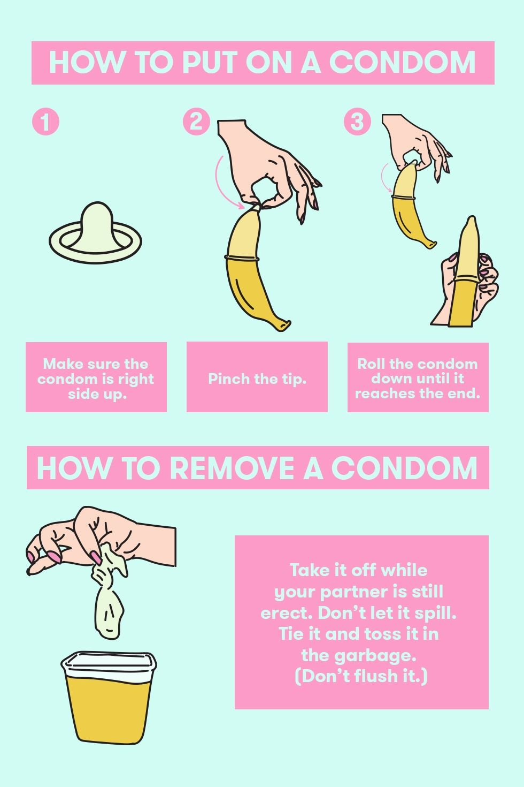

Being fully aware of what comes with sex is understanding how to protect yourself, that is either by using condoms, birth control, and always having the consent of both parties.
There are many forms of birth control that are available for you. So, if you feel ready to begin having sex then it is important to sit down and think about what will work for you. Birth conrtol is a form of pregnancy prevention, before getting pregnant. However, birth control does not protect against sexually transmitted diseases such as HIV or STDs. Take a look at these options and stop worrying about pregnancy.
You have to take this pill once a day and is an affordable method of preventing pregnany. It is 91% effective and has hormones that prevents ovulation, meaning that there is no egg ready for fertilization. However, there is still a risk of getting pregnant due to not being on time when taking the pill. A good way to work around this would be by setting daily alarms and reminding yourself to get a refill when it's time. The better you are at taking the pill on time, the more effective it is.
The implant is one of the most effective methods of birth control, being 99% effective. It is a small rod that is inserted into your arm by a nurse or doctor. It is also a hormonal birth control because it produces progestin which prevents the sperm from ever meeting the egg because it thickens the mucus of your cervix, it also prevents ovulation. It is important to know that although the implant provides protection against pregnancy for up to four years, you can take it out at any time if you feel you no longer want it.
IUD is an acronym for Intrauterine Device which is a T-shaped device that is inserted into your uterus and is 99% effective. Unlike the pill, you can't forget to take it because it is effective for 3 to 12 years, depending on what type of IUD you get. The copper IUD, ParaGard, can also be used as emergency contraception and is 99.9% effective if used within a 5-day limit of having had unprotected sex. The 2 types of IUDs can be broken down to copper IUDs and those that are hormonal. While Paragard is effective for up to 12 years, hormonal IUDs have different durations ( Skyla 3 years, Mirena 6 years, Kyleena 5 years, and Liletta 4 years.)
The patch is an affordable and safe form of birth control. It is placed on your skin like a sticker on either your belly, back, butt, or your upper arm. The patch has a life cycle of 3 weeks allowing you to get a break for a week before putting on a new patch. Keeping your patches in a safe location at room temperature is important and it can be 99% effective if you are on time with it. If not it becomes 91% effective which could also be caused by certain medications so it is a good idea to talk to your doctor about how medicines you take may affect your birth control.
The NuvaRing lasts for 1 month and requires a prescription from the doctor to be able to obtain it. It is used by most people for 3 weeks allowing them to get their period during the 4th week. It can help relieve period cramps and can even be used to skip it. The NuvaRing is very effective so long as it is used correctly and it is in your vagina when it has to be. The ring has many benefits other than pregnancy prevention. For example, it can reduce acne, anemia, and even cysts in the breasts and ovaries. It is 91% effective.
The shot is a hormonal form of birth control producing progestin to stop ovulation from occuring. The shot must be given to you by a nurse or doctor every 3 months. The shot becomes effective after 7 days which means you should be using a condom for that week. You should set alarms to remind yourself of when you need to take your shot in order to ensure its effectiveness which can go from 99% to 94% if not taken on schedule. Therefore, if you are 2 weeks overdue for your shot your nurse or doctor will ask you to take a pregnancy test before taking your next shot. It may also cause you to get a lighter period or even not get one at all - which is completely safe!
Although birth control does prevent pregnancy, it does not protect against STDs.
Condoms however, get the job done! Condoms are used are used as contraception and prevention against STDs. There is a male condom and a female condom.
The closed ring of the female condom goes into the vagina leaving the other ring open. It is meant to line the walls of the vagina in order to provide
protection against sperm. Unlike a male condom, the female condom can be inserted into the vagina 8 hours prior to having sex, and must be taking out
immediately after. The male condom is more commonly used and is to be rolled all the way to the base of the penis, pinching the tip of the condom to
leave room for ejaculation, making it more unlikely to break.
Here are instructions on how to properly put on a condom